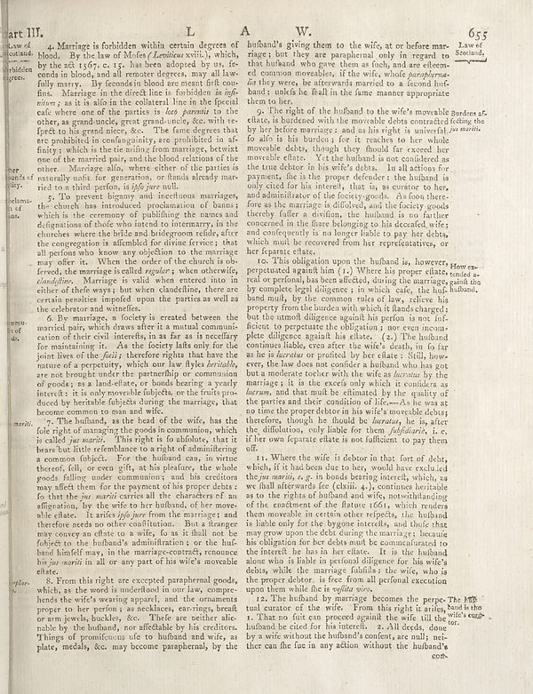

Source · scan and Parse blocks
Layers 2

Parse text by block reading order
- 0Captionart III.
- 1Text4. Marriage is forbidden within certain degrees of blood. By the law of Mefo _(Lestieux_ xvii,) which, by the act 1567; c. 15. has been adopted by us, fe- comed in bloods and all remote degrees, may all lay fully marry. By recorded blood are much first cu- fist. Marriage in the direct line is forbidden _in infibrions_ a as it is also in the coherent line in the fiscal case where one of the parties in _is too_, _parents to the other, as grand-uncle, great grand-uncles, &c with re- fect to be grand dressing. See. The fans degrees are prohibited in condignants, are prohibited in af- finity; which is the tie arising from marriage, betwixt one of the married pair, and the blood relations of the other. Marriage also, where other of the parties are naturally unfit for generation, or funds already mar- rich but a third person, i.i (fójé per null).
- 2Text5. To prevent bigany and nectitious marriages, the church has introduced production of banks which is the ceremony of publishing the names and obligations of their who intend to intermany in the churches where the brilde and bridgeroom edides, after the congregation is afforded for divine ferries; that all parties who know any collection on the marriage may offer its. When the order of the church is the foresee the marriage is called equalers, when otherwise, clandligne. Marriage is valid when entered into in either of them ways; but when clandeline, there are certain penalties imposed upon the parties as well as the celebrate and winters.
- 3Text6. By marriage, a factory is created between the married pair, which draws after it a mutual commute nation of their civil interests, in as far as in excellent for maintaining it. As the footey falls only for the joints lives of the fact; therefore they have that have the nature of a perpetuity, which our law flyks _heritable_, are not brought under the partnership or communion of goods as a local efter, or bookear by a yearly interest: it is only movable subjects, or the fruits produced by heritable objects during the marriages, that become common to me and wife.
- 4Text7. The hufland, as the head of the wife, has the fate right of managing the good in communities, which is called _jus murals_. This night is to holdout, that in bears but little refremble to aright of administering a common object. For the husband can, in virtue thereof, till, or even gift, at his placeins, the whole goods falling under communion; and his creditors may affect them for the payment of his parents’ duties for that the jus murals carries all the characters of an affigation, by the wife to her husband, of her moveable else. I wanted _life just here the marriages and therefore needs no other condition than. But stronger may convey an offate to a wife, fo as it shall not be falsely on the husband, administration or the hub- hand himself may, in the marriage–contries, economic his _ju murarit_ in all or any part of his wife’s moveable effect.
- 5Text8. From this right are excepted paraphernal goods, which, as the word is understood in our law, compa- heute wife wearing apparel, and the ornaments proper to her perfus in such neckars, earring, breath or arm jewels, buckles, etc. There are neither alienable by the hufland, was affected by his children. Things of promotions uile to hufland and wills, as plate, medals, &c. may become paraphernal, by the
- 6Texthufland's giving them to the wife, at or before mar- ringe; but they are paraphernal only in regard to that hufland, who gave them as fuch, and are eltem- em common movables, if the wife, whole _paraphrma_ as the way were, the afterwards married to a four huf- band; unless he fault in the fame manner appropriate them to later.
- 7Text9. If the right of the hufland to the wife’s moveable Bunders af- efiction, is burdened with the morevable debts contracted feeling the by before marriages, and as the right is universal, by marritis. So alls in his burdens; for the reason to how movable debts, though they should far exceed her movieable effects. Yet the hufland is considered as the true doctor in his wife’s debts. In all all persons for payments, file is the proper defender; the hufland is only cited for his interest, that is, as crime to bear, and administrative of the footing goods. As long therefore as the marriage is dilofened, and the footy goods thereby (after a division, the hufland is no further concerned), the fines belonging to his deceased, wife; and consequently is no longer liable to pay her debts, which much life recovered from her representatives, or her female relate.
- 8Text10. This obligation upon the hufland is, however, perpetuated against him [1.] Where his proper dissate tended a red or personal, has been affected, during the marriages paid and by complete legal diligence in which cafe, the huf- husband, bund mulls, by the common rule of law, relieve his property from the number with which it lands charged; and the unconditional gace against his person is not influence to perpetuate the religious; nor even consulate diligence against his class. (2.) The hufand contains liable, even after the wife’s death, no fo far as he is because we profited by her class : Still, however, the law does one consider a hufland who has got but a moderate teacher with the wife as _lucrative_ by the marriage; it is the excess only which it considers as lucrons, and that must be eliminated by the quality of the parties and their own condition of life—As he was at my time the proper debate in his wife’s moveable there, therefore, though he should be lucratas, he is after the difoloton, only liable for them _fufuldurie_, i. e. if her now feature alleats is not sufficient to pay them off.
- 9Text11. Where the wife is deborn in that fort of debts, while if it had been due to the trouble, excelled the _juu mariis, e.g._ in bonds bearing intellect, which, as we fault afterward fee (claims, for contain particulars as the results of the hufland and wife, postwithstanding of the enactment of the flatature 1661, which renders them movement in certain other reflects, like hufland is liable only for the bypassing intents, and chule that may grow upon the debt during the marriages; because the obligation for her debts must be communicated to the intent it, has in its class. Is the hufland alone who is liable in personal diligence for his wife’s debts, while the marriages lobbifies the wife, who as the greater debtor, is free from all political execution upon them while file is _volite vivo_.
- 10Text12. The hufland the marriages becomes the perpе. The fifth tul curator of the wife. From this right it arises, and is the title "must endure" eugly.
Provenance page_id, checksum, Parse model
- page_id
- britannica:309f765b1ecc83e0a7f7762e44b4a927a7555443:train:266
- sha256
- dfbe51d091279145e37f51fdee7d7b6903c89ea6d64f90fb27913a7d0437e246
- Parse
- nvidia/nemotron-3.5-parse · finish stop